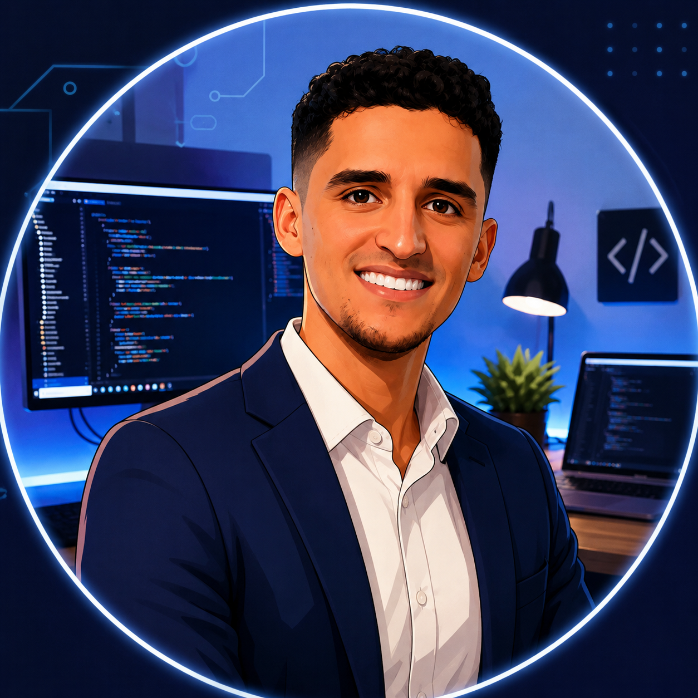

Ingeniero de Big Data | Data Engineer
Especializado en arquitecturas de datos distribuidos, procesamiento de flujos con Kafka y Flink, y plataformas de datos a gran escala. Experiencia en el proyecto del Euro Digital en el Banco de España.
Big Data Engineer · Data Architect · Tech Lead · Cloud
Soy Ingeniero de Big Data con más de 6 años de experiencia en el desarrollo de plataformas de procesamiento de datos a gran escala. Mi trayectoria me ha llevado desde el desarrollo backend con Java y Spring Boot hasta la implementación de arquitecturas complejas de procesamiento en tiempo real con Apache Kafka, Flink y Spark.
Actualmente participo en el proyecto del Euro Digital en el Banco de España, donde trabajo con microservicios, streaming de datos y análisis batch. Me apasiona construir sistemas robustos y escalables que procesen millones de eventos por segundo.
Desarrollador Backend (Java / Spring / Flink / Kafka / Druid)
Desarrollador de procesos estadísticos
Desarrollador Big Data / Migración Batch
Programador en Business Intelligence
Desarrollador Ionic - Facultad de Informática
Desarrollador Full-Stack
Desarrollador VB
Apasionado por la enseñanza y la transmisión de conocimiento. Imparto clases particulares y formación profesional en todas las áreas de la informática.
¿Buscas profesor de programación, informática o matemáticas? Clases particulares a todos los niveles. Online o presenciales en Murcia.
Contáctame para clasesUniversidad de Murcia · 2015-2020
Especialidad TII.E.S Politécnico, Cartagena · 2013-2015
PCB · ElectrónicaI.E.S. Luis Manzanares · 2011-2013
Ciencias y TecnologíaFundamentos de Azure
MicrosoftPlataforma interna BBVA
BBVAIFCT127PO
Formación oficialADGD348PO
Metodologías ágilesIFCT163PO
IA aplicadaFormación avanzada BBVA
BBVADesarrollo frontend
Formación continuaAndroid · Ionic (iOS/Android)
Aplicaciones híbridasMongoDB · MySQL · Access · Docker
Contenedores y BBDDCisco · GNS3
Infraestructura de redRational Doors · Microsoft Project
Gestión de proyectosJava · Arquitectura REST
Desarrollo backend